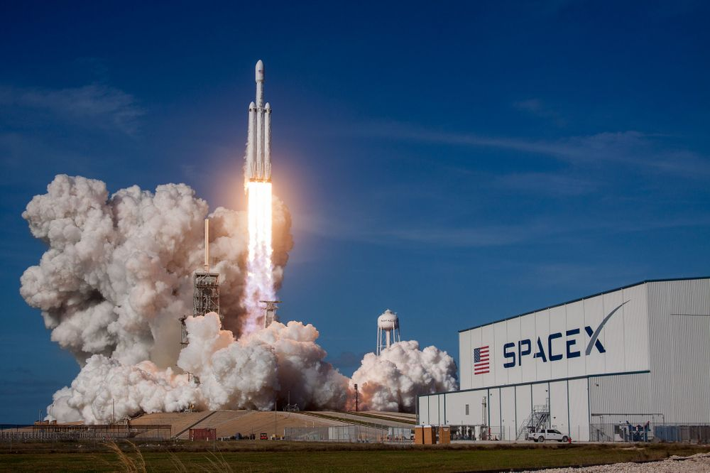

Youtube
Youtube
1. 개요
스페이스X는 2002년 5월 6일 일론 머스크가 설립한 미국의 민간 우주기업이다.

2. 상세
ISS 보급 및 상용 인공위성 발사를 주 업무로 하며, 차후 화성 유인 탐사 및 정착을 목표로 하고 있다. 대외적으로는 스페이스X(SpaceX)라는 명칭으로 널리 알려져 있으나, 공식적인 기업명은 'Space Exploration Technologies Corporation'이다.
정부 기관의 담당이던 우주항공산업을 민간 벤처기업이 하면 어떨까?'하는 일론 머스크의 발상에서 시작되었다. 재사용 로켓을 개발하여 로켓 발사비용을 기존의 10분의 1 수준으로 줄이겠다는 것이 주된 기술 개발 방향. 우주 정거장 보급 프로젝트에 선정되어 대규모 투자를 받아 현재에 이르고 있다.
민간 우주기업은 머스크만 생각한 것도 아니고 스페이스X가 처음인 것도 아니다. 머스크가 대학 다니던 시절부터도 우주탐사를 담당하는 기업이라는 아이디어는 정부기관이나 군에서 퇴직한 엔지니어들의 창업 아이템으로써 많이 손때가 묻은 아이디어였고, 그때부터 지금까지도 민간 우주기업은 계속해서 설립이 추진되거나 인수, 합병을 거치고 있지만, 절대다수는 아이디어만 멋있는 흔한 벤처기업에 지나지 않아 장기적으로는 내려가기 일쑤였다. 하지만 보잉, 록히드 마틴, 노스롭 그루먼, 그리고 ULA로 대표되는 오랜 역사의 군수산업체에서 기원한 거대 경쟁사들과 대등하거나 오히려 압도하기까지 하는 강렬한 성공신화를 쓴 기업은 스페이스X 외엔 없다는 점을 생각하자. 물론 이게 꼭 스페이스X가 우월한 기술력을 쌓아서만 성공한 것은 아니다. 시장의 알파요 오메가라 할 수 있는 NASA가 우주 민영화를 중시한다는 점을 깨닫고 자신들의 역량을 총동원, NASA와 높으신 분들의 지지를 이끌어낸 것뿐만 아니라 NASA의 은혜를 입은 것 또한 크다. 하지만 현실적으로 보면 민간 우주개발 시장에서 NASA의 지원 없이 독자적으로 성공한다는 건 하늘의 별 따기 수준이니 이는 당연한 사실이다. 예로부터 훨씬 오래된 훨씬 많은 로켓과 우주선의 청사진이 넘쳐났지만 이들을 물리치고 NASA의 간택을 받은 경쟁력 자체가 스페이스X의 역량이라 할 수 있을 것이다.
하지만 그만큼 우주 산업 쪽에서는 근무환경이 나쁜 회사로 악명이 높은데, 어느 정도는 사실이고 어느 정도는 걸러 들을 필요가 있다. 자주 나오는 이야기가 야근이 일상적이고 월급은 상대적으로 적다는 것인데, 여러 증언을 모아보면 정확히는 우주 산업 기준으로 월급이 적고 야근이 거의 생활화된 데에 비해 야근 수당은 잘 지급되지 않는다는 쪽으로 이야기가 모인다. 결국 수익이 이제서야 막 나기 시작한 스타트업의 본질적인 문제인데, 창업자가 세워놓은 목표치는 높고, 개발 일정은 비현실적이고, 빨리 개발을 끝내고 수익을 내기 위해 사람은 최대한 많이 끌어 모아야 하니, 창업자의 스타성과 기업의 비전으로 약을 팔아 업계 표준 이하의 근무조건과 높은 퇴사율을 극복하는 것이다. 그러나 이는 어디까지나 나사, 록히드마틴, 보잉같은 초대형 집단들만 즐비한 우주 산업 기준이라는 점을 기억하자. 여전히 공학 계열 직업들 중에서는 평균 이상의 페이가 나오기 때문에 월급이 그렇게 적은 건 아니라는 의견도 꽤 있고, 무엇보다 경쟁사 대비 아주 과격한 발전을 이루어내고 있기 때문에, 안락한 생활보다는 업적을 더 중요시하거나 경력을 쌓아 다른 회사의 고위직으로 이직하려는 항공우주 전공자들이 계속해서 모이고 있다. 게다가 스페이스X의 역량을 생각해보면 월급이 조금 적은 것이 그렇게 손해는 아닐 수도 있다. 그리고 한국인들은 잘 생각못하는 것이, 적은 월급을 "미래수익공유계약", 즉 스톡옵션으로 해결하는 미국 스타트업 특성상, 월급은 적을지 절대 대우가 나쁘다고 볼 수 없다. 나중에 회사가 커지면 수십배에서 수백배 뻥튀기가 가능한데 스페이스X는 이미 여러번 성공을 거둔 일론 머스크가 이끄는 곳이라 성공 가능성이 매우 높다.
그래도 2010년대 기준 세계에서 가장 흥하는, 그리고 세계의 흐름을 바꿔나가고 있는 민간 우주기업이라 할 수 있다. 팰컨 9이 성공적으로 데뷔한 이후 세계 여러 나라의 차세대 상용 발사체 상당수가 재활용 기술 도입을 검토하거나 실제 포함하여 개발되고 있다. 아리안 6, 벌칸 등은 말할 것도 없고, 심지어 중국과 러시아제 로켓과 우주선들마저도 재활용 기술을 적극 연구하고 있다. 그리고 이렇게 경쟁자들의 모방이 잇따르는데도 2020년을 기준으로 우주에 화물을 발사하고 1단 로켓을 회수, 재사용할 수 있는 항공우주조직이 아직도 스페이스X 하나뿐이라는 점 또한 무시할 수 없을 것이다.
인류 역사상 NASA, 로스코스모스, 중국 국가항천국과 함께 우주에 우주인을 태운 캡슐과 발사체를 발사해 회수까지 성공한 4곳의 집단 중 한 곳이며, 우주왕복선을 포함한다면 발사체 회수는 NASA와 함께 두곳, 로켓 1단 부스터 회수로만 따지면 세계에서 유일무이하다.
3. 역사
내용이 상당히 길다. 절대 귀찮아서 그러는 게 아니다.
4. 발사체
그냥 이거 보면 안될까?
(나무위키 저작권 상 아무거나 막 퍼오면 안됨)
5. 주요시설
몇 개 유명한 것만 추렸다
1. 케이프 커내버럴

스페이스X는 현재 케이프 커내버럴 공군기지에서는 SLC-40 발사장을 임대 중이며, 케네디 우주센터에서는 LC-39A 발사장을 임대 중이다.
2010년 팰컨 9 시험 발사 당시부터 사용 중인 SLC-40은 과거 타이탄 로켓을 발사하던 발사장으로 화성 기후 궤도선과 카시니-하위헌스 탐사선을 발사했던 곳이기도 하다. 스페이스X의 동해안 발사 미션의 대부분은 여기서 발사되며, 2016년 말 AMOS-6 미션 전 팰컨 9 폭발로 인해 발사대가 파괴되어 약 1년간의 복구 작업 끝에 2017년 말 CRS-13 미션부터 정상화되었다.
이 쪽의 전설은 아니고 레전드로는 무려 케네디 우주센터의 LC-39A 발사장을 NASA로부터 임대 중이다. 2011년 STS-135 발사 이후 우주왕복선이 모두 퇴역하고, 컨스텔레이션 계획의 유일한 산출물인 아레스 I 로켓이 LC-39B 발사장에서 발사된 전적 때문에 SLS 로켓을 LC-39B에서 발사하기로 한 NASA에서 스페이스X에 팰컨 헤비 발사에 쓰라고 20년 장기 임대 계약을 통해 2014년에 발사장을 넘겨 줬다. 발사장을 인계받은 스페이스X는 과거 우주왕복선 수송 무한궤도차량이 오가던 크롤러 웨이 위에 자체 격납고를 건설하고 우주왕복선 화물 적재장비를 철거한 다음 2017년 CRS-10 미션부터 팰컨 9를 취급하기 시작했다. 2018년 11월경에는 기존의 우주비행사용 보딩 브릿지를 대신해 드래곤 V2 미션에 사용될 신형 보딩브릿지를 장착하였고 2019년에는 타워를 검은색으로 칠하여 리모델링하였다. 2019년 현재는 드래곤 V2 탑재 팰컨 9과 팰컨 헤비만 취급한다. 추후 스타십을 위한 발사대는 보카 치카에 지을 예정이다.
2. 착륙대

대부분의 스페이스X 로켓들은 해상 바지선에 착륙하지만, 지구 저궤도나 태양동기궤도, 혹은 팰컨 헤비 사이드 부스터들은 지상 착륙대에 착륙한다. 우선 케이프 커내버럴의 동해안 착륙대로는 LZ-1, LZ-2가 있으며 이들은 아틀라스 로켓이 발사되었던 LC-13을 철거한 부지에 조성되었다. LZ-1은 2015년 12월 ORBCOMM-2 미션 후 팰컨 9가 착륙한 것을 시작으로 운영 중이며 LZ-2는 팰컨 헤비 사이드 부스터 착륙시에만 사용한다. 2019년 4월 드래곤 V2 폭발사고로 하이드라진 오염을 당한 적이 있으며, 이 때문에 동년 5월까지 착륙대가 폐쇄되었다.
반덴버그 공군기지에서 발사되는 스페이스X 로켓은 지상 착륙을 할 경우 SLC-4W 발사장을 철거한 부지인 LZ-4에 착륙한다. 2016년부터 2018년까지 LZ-4 건설을 진행했으며 2018년 SAOCOM-1A 미션에서 처음으로 서해안 착륙에 성공했다. LZ-4는 SLC-4E에서 얼마 떨어져 있지 않은데, 이는 스페이스X의 24시간 내 동일 로켓 재발사를 위한 큰 그림이라고 한다.
.jpg)